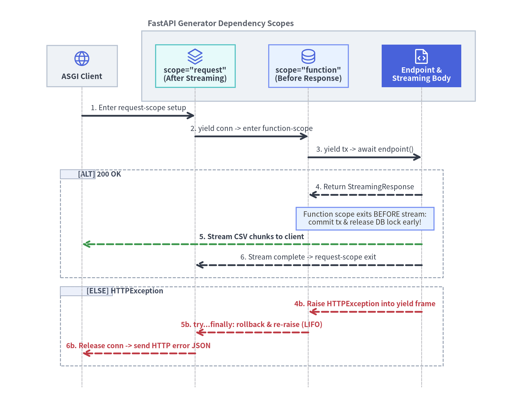

依存関係グラフ・リクエスト単位キャッシュ・yield スコープ
FastAPI v0.162.2 はすべてのパスオペレーションとサブ依存関数を有向非巡回グラフ（DAG）として構成し、リクエスト単位の依存結果キャッシュと関数スコープ／リクエストスコープの 2 段階による yield クリーンアップタイミングを厳密に制御します。

1. 依存関係グラフ（DAG）の構築と解決の仕組み
FastAPI はルート登録時に一度だけエンドポイントのシグネチャ・Annotated[..., Depends()] マーカー・Security() 宣言を解析し、不変の依存関係グラフを構築します。リクエスト処理時のホットパスでは型リフレクションを行わず、事前構築済みの DAG を深さ優先で走査して各依存を解決します。
| 依存関係システムの機能 | 宣言パターン | リクエスト実行時の動作 |
|---|---|---|
| サブ依存グラフ（DAG） | Annotated[T, Depends(fn)] / Depends() |
末端のパラメータ（Path・Query・Header・Cookie・Body）および子依存を先に検証・解決してから親 Callable を呼び出します。 |
| リクエスト単位キャッシュ | Depends(fn, use_cache=True) （既定） |
(callable, oauth_scopes, scope) をキーとしてリクエストごとに戻り値を保持し、ダイヤモンド依存の分岐間で結果を共有します。 |
| グラフ全体の一括差し替え | app.dependency_overrides[orig] = mock |
ルーター・認可ガード・入れ子のクラス依存にまたがる任意の依存ノードをテストやステージング環境で一括置換します。 |
| 実行ディスパッチ | async def / def / yield |
async def はイベントループ上で直接 await し、同期 def はワーカースレッドプールで実行し、yield は自動解放を予約します。 |
1.1 リクエスト単位キャッシュ（use_cache=True と use_cache=False）
実践的なレイヤード設計では、エンドポイントが BillingService と AuditLogger の両方を注入し、その双方が get_db_session と get_settings に依存するような「ひし形（ダイヤモンド）依存」が頻出します。FastAPI はデフォルトで Depends(..., use_cache=True) を有効にしており、各 HTTP リクエストまたは WebSocket セッションの生存期間にわたってリクエスト単位の依存キャッシュ（Callable とスコープの組で管理）を保持します。
- リクエスト内シングルトン共有（
use_cache=True）: 先に解決されるBillingServiceがget_db_session()を 1 回だけ実行し、そのセッションを当該リクエスト用にキャッシュします。直後に同一リクエスト内でAuditLoggerがget_db_sessionを要求すると、FastAPI はキャッシュから同一の Python オブジェクト（billing.db is billing.audit.db）を返し、複数サービス間のトランザクション整合性を保証します。 - 毎回新規実行（
use_cache=False）:Depends(generate_trace_nonce, use_cache=False)を指定するとキャッシュ参照をスキップし、注入箇所ごとに毎回新しく関数を呼び出します。 - OAuth2 スコープを考慮したキャッシュ分離: サブ依存が
SecurityScopesを受け取る場合（詳細は 認証・OAuth2 スコープ認可・抽出器 を参照）、累積された OAuth2 スコープもキャッシュキーへ組み込まれるため、要求スコープの異なる呼び出し同士が誤って共有されることはありません。
[!IMPORTANT] FastAPI の依存関数や Pydantic モデルをネストしたローカルスコープ内で定義するモジュールでは、
from __future__ import annotationsの使用を避けてください。FastAPI はルート登録時にAnnotated[T, Depends(...)]の型メタデータを評価するため、解決不能なローカルシンボルを参照する文字列化アノテーションは依存として認識されず、必須クエリパラメータ（422 Unprocessable Content）として扱われます。
1.2 多階層サブ依存・クラス依存・パラメータ化 Callable
FastAPI では通常の関数だけでなく、クラスのコンストラクタ（__init__）や呼び出し可能インスタンス（__call__）もそのまま依存ノードとして利用できます。
- クラス依存の省略記法（
Annotated[BillingService, Depends()]）:Depends()の引数を省略すると、FastAPI はパラメータの型注釈（BillingService）を検査し、サブ依存を再帰解決したうえで__init__を呼び出します。 - パラメータ化された Callable インスタンス（
RoleChecker(["admin", "finance"])）: 設定値を受け取るクラスにasync def __call__(self, ...)を実装することで、クロージャやグローバル変数に頼らず再利用可能な認可ガードを量産できます。 - ルーター／アプリ単位のガード（
dependencies=[Depends(...)]）:APIRouter(...)・@router.post(..., dependencies=[...])・FastAPI(dependencies=[...])にdependenciesを渡すと、各エンドポイントの関数シグネチャを汚さずに共通検証や認可ガードを実行できます（リクエスト単位キャッシュも同様に共有されます）。
import secrets
from dataclasses import dataclass
from typing import Annotated
from fastapi import APIRouter, Depends, FastAPI, Header, HTTPException, status
@dataclass(frozen=True)
class AppSettings:
tenant_header: str = "X-Tenant-ID"
currency: str = "USD"
def get_settings() -> AppSettings:
return AppSettings()
session_counter = 0
async def get_db_session() -> dict[str, int | str]:
global session_counter
session_counter += 1
return {"session_id": session_counter, "driver": "asyncpg"}
def generate_trace_nonce() -> str:
return secrets.token_hex(4)
class AuditLogger:
def __init__(
self,
db: Annotated[dict[str, int | str], Depends(get_db_session)],
settings: Annotated[AppSettings, Depends(get_settings)],
nonce: Annotated[str, Depends(generate_trace_nonce, use_cache=False)],
) -> None:
self.db = db
self.settings = settings
self.nonce = nonce
class BillingService:
def __init__(
self,
db: Annotated[dict[str, int | str], Depends(get_db_session)],
settings: Annotated[AppSettings, Depends(get_settings)],
audit: Annotated[AuditLogger, Depends()],
nonce: Annotated[str, Depends(generate_trace_nonce, use_cache=False)],
) -> None:
self.db = db
self.settings = settings
self.audit = audit
self.nonce = nonce
class RoleChecker:
def __init__(self, allowed_roles: list[str]) -> None:
self.allowed_roles = set(allowed_roles)
async def __call__(self, x_role: Annotated[str, Header()] = "viewer") -> str:
if x_role not in self.allowed_roles:
raise HTTPException(
status_code=status.HTTP_403_FORBIDDEN,
detail="Insufficient role privileges",
)
return x_role
async def verify_tenant_header(
settings: Annotated[AppSettings, Depends(get_settings)],
x_tenant_id: Annotated[str | None, Header()] = None,
) -> str:
if not x_tenant_id:
raise HTTPException(
status_code=status.HTTP_400_BAD_REQUEST,
detail=f"Missing {settings.tenant_header}",
)
return x_tenant_id
require_billing_admin = RoleChecker(["admin", "finance"])
billing_router = APIRouter(
prefix="/billing",
dependencies=[
Depends(verify_tenant_header),
Depends(require_billing_admin),
],
)
@billing_router.post("/invoices")
async def create_invoice(
billing: Annotated[BillingService, Depends()],
) -> dict[str, object]:
return {
"db_session_id": billing.db["session_id"],
"shared_same_db": billing.db is billing.audit.db,
"distinct_nonces": billing.nonce != billing.audit.nonce,
"currency": billing.settings.currency,
}
app = FastAPI()
app.include_router(billing_router)
上の構成では get_settings() が 3 箇所（verify_tenant_header・AuditLogger・BillingService）で宣言されていますが、リクエスト単位キャッシュによってリクエストあたり 1 回しか実行されず、billing.db is billing.audit.db も常に True となります。また結合テスト時には app.dependency_overrides[get_db_session] = override_db を設定するだけで、DAG 全体の末端ノードを一括差し替えできます（大規模 DI・Lifespan 管理・テスト戦略 および 実践テスト手法と本番 ASGI 運用 を参照）。
2. yield によるリソース管理とクリーンアップスコープ
async def または同期 def 内で yield を使うジェネレータ依存は、処理を yield 前のセットアップフェーズ と yield 後のティアダウンフェーズ に分割します。FastAPI v0.162.2 では、入れ子になった 2 種類のクリーンアップスコープによって解放タイミングを正確に制御できます。
- 関数スコープのクリーンアップ（
Depends(..., scope="function")）: パスオペレーション関数が戻り値を返した 直後、すなわちレスポンスバイト列のネットワーク送信やStreamingResponseのイテレーションが開始される 前 にクリーンアップを実行します。 - リクエストスコープのクリーンアップ（
Depends(..., scope="request")、デフォルト）: パスオペレーションとレスポンス送信の双方を外側から包み、HTTP レスポンス送信・ストリーミングチャンク送出・バックグラウンドタスクが すべて完了した後 にクリーンアップを実行します。

2.1 scope="function" と scope="request" の使い分け
scope を省略した場合、ストリーミング応答のジェネレータ内からも安全にリソースを参照できるようデフォルトで scope="request" が選択されます。低速なクライアント回線下で DB コネクションプールの枯渇を防ぐには、用途に応じて scope="function" と scope="request" を明示的に使い分けます。
| 比較項目 | Depends(dep, scope="function") |
Depends(dep, scope="request") （yield のデフォルト） |
|---|---|---|
| クリーンアップ段階 | 関数スコープ（エンドポイント関数が返った直後） | リクエストスコープ（応答送信・ストリーミング完了後） |
| 解放タイミング | レスポンスバイト列およびストリーミング送信の 開始前 | レスポンス送信・ストリーミング・背景タスクの 完了後 |
| 主な適用場面 | 書き込みトランザクション、行ロック、ハンドラ固有の RPC スパン | StreamingResponse や SSE 内で読み取るカーソル、リクエスト全体の監査文脈 |
| サブ依存の制約 | "request" と "function" の両方に依存可能 |
より寿命の短い "function" スコープ依存を子に持つことは不可 |
2.2 必須の try...finally クリーンアップと例外再送出
あなたの yield 依存が開始された 後 に、兄弟となる別の依存関数やエンドポイント本体が例外（HTTPException やドメイン例外など）を送出すると、FastAPI は待機中の yield 行へ逆順（LIFO）でその例外を伝播させます。本番コードでは次の 2 原則が絶対条件となります。
- 必ず
try ... finally:でyieldを囲む:finally:を使わずyieldの後ろにそのまま後処理を記述すると、未捕捉例外でリクエストが中断された際にクリーンアップがスキップされ、DB セッションやセマフォがリークします。 yield後に例外を握りつぶさない: ロールバック処理のためにexcept Exception:で捕捉する場合（except Exception: await tx.rollback(); raise）も、必ず例外を再送出（raise） してください。yield後に例外を握りつぶして再送出しないと、FastAPI の例外ハンドラが動作せずレスポンス未生成となり、500 Internal Server Errorの原因となります。
from collections.abc import AsyncIterator
from typing import Annotated
from fastapi import Depends, FastAPI, HTTPException, status
from fastapi.responses import StreamingResponse
events: list[str] = []
app = FastAPI()
async def get_request_connection() -> AsyncIterator[str]:
events.append("req_conn:enter")
try:
yield "conn_pool_1"
finally:
events.append("req_conn:exit")
async def get_db_transaction(
conn: Annotated[str, Depends(get_request_connection, scope="request")],
) -> AsyncIterator[str]:
events.append(f"fn_tx:enter({conn})")
try:
yield "tx_active"
events.append("fn_tx:commit")
except Exception:
events.append("fn_tx:rollback")
raise
finally:
events.append("fn_tx:exit")
@app.get("/reports/export")
async def export_report(
tx: Annotated[str, Depends(get_db_transaction, scope="function")],
fail: bool = False,
) -> StreamingResponse:
events.append(f"endpoint:body({tx})")
if fail:
raise HTTPException(
status_code=status.HTTP_409_CONFLICT,
detail="Report snapshot locked",
)
async def stream_rows() -> AsyncIterator[bytes]:
events.append("stream:chunk_1")
yield b"id,amount\n1,250\n"
return StreamingResponse(stream_rows(), media_type="text/csv")
GET /reports/export を実行すると、events には ["req_conn:enter", "fn_tx:enter(conn_pool_1)", "endpoint:body(tx_active)", "fn_tx:commit", "fn_tx:exit", "stream:chunk_1", "req_conn:exit"] の順序が記録されます。"function" スコープのトランザクションは stream_rows() が最初のチャンクを送出する 前 にコミット・解放され、一方で "request" スコープのコネクションはストリーミング完了後まで維持されます。また ?fail=true で 409 Conflict が発生した場合も、except での再送出と finally: によって ["req_conn:enter", "fn_tx:enter(conn_pool_1)", "endpoint:body(tx_active)", "fn_tx:rollback", "fn_tx:exit", "req_conn:exit"] と LIFO 順で確実に解放されます。
続いて次節 認証・OAuth2 スコープ認可・抽出器 では、fastapi.security がこの依存関係グラフの上に資格情報抽出・階層的 SecurityScopes・OpenAPI 3.1 securitySchemes をどのように統合しているかを解説し、ストリーミングとの組み合わせについては ネイティブ SSE・JSONL・WebSocket で掘り下げます。